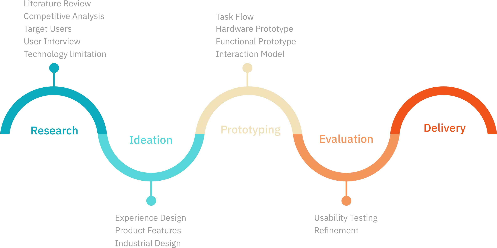

Tea Sensor
Timeline
16 Months
Role
Lead Hardware Prototyper, Researcher, Interaction Designer
Team Member
Jeremy Chen (Prototyper), Yu-Kui Hunag (Researcher), Zi-Han Chen (Industrial Designer), Bo-En Chen (Industrial Designer), Yi-Lian Shen (Industrial Designer)
Individual Key Activities
Interview, Persona, Competitive Analysis, Journey Mapping, User Flows, Hardware Prototyping, Usability Testing
Tools
Sketch, Photoshop, Arduino, Rhino
Sponsor
MediaTek
Press
Techbang
Prize
Merit Award
Challenge
No matter what the season, tea can be a tasty beverage since it can be served iced or hot. There's nothing as refreshing and relaxing as a cup of tea. However, we notice people who like to drink tea always have a problem of brewing good tea. When brewing good tea, it involves complicated process. People often feel mad about the process, so they neglect the procedure. It leads to the tea does not brew in a proper way.
Solution
How might we design a device that brews good tea based on user’s preference? By using this device, users don’t have to involve complicated process. They just have to press a single button. The device will take care all of the process.
What I learned
As a lead hardware-prototyper, I worked individually to create prototypes through Arduino. I collaborated closely with industrial designer to balance the limitation bewteen design and technology. From this project, I have learned how to create a product from research, design, test and launch. When launching a product, we need to always think about the value proposition. How does your product generate value to users?
Process

Research
Secondary Research
From our research, we learned that on any given day, more than one half of the American population drinks tea. On a regional basis, the South and Northeast have the greatest concentration of tea drinkers. Futhermore, hot Tea consumption has grown steadily over the past 5 years, as consumers embrace its health benefits and variety.
“ The bagged/loose leaf tea segment (DMM/Grocery) continues to lag, showing little to no growth, although it appears to have recovered some of the market share losses in 2016. ”
Source: Tea Association of the U.S.A. Inc.
User Interview
In user interview, target users are conducted with the participation of our target audience for our device. We targets the age of the focus group from 20 to 40, which was often called young adult. We first do the interview with 4 people to know their experience when brewing tea. Then, we start to use affinity diagram to organize our idea and conclude the research result with journey mapping and pain point the users have. From the research we got, we knew some prior points which customers care.
Key Insight
No Effort
Instead of the traditional brewing tools, customers want a device which can assist them to brew a good quality of tea with no efforts.
Portability
The customers prefer the device is portable. It meets the need of brewing tea everywhere.Identify Problem and User
After we considered the objectives which the customer’s needs, it is imperative to set the main purpose for Intelligent Tea Sensor. Setting the main purpose plays a important role for the whole project. It is common for some projects distracted from their initial main purpose when the project is finished. Targeting customers trying to brew tea as easy as possible, we framed our main research question:
How can we assist users with brewing high quality of tea based on their preference?
Competitive Analysis
At this point, it does not have too much competitor solve the problem of brewing good tea. However, there are three relevant competitors we can learn from.
From competitive analysis, we learned that those existing products are more focusing on using their products at home instead of taking around. Current techologies those competitors used are time and temperature. Something interesting is that one competitor take good advantages of pressure between water and tea to detect the tea.

Ideation
Concept
The first draft of Intelligent Tea Sensor is like a bottle. We figure out that the best way to deal with being portable and having a high quality of tea everywhere is to design a device combining those points together. A bottle can do everything. It is easy to take. Moreover, it is a container which users do not need to find another container to fill in the water to brewing tea. Nonetheless, A bottle design is not flexible. If the customers want to brewing tea at a cup, this design can not meet the need. This design is also lacking of be creative and innovative.
Second design we have is a lid design. This design settles the problem of different container. Users can use diversity of container to brewing tea. In addition, it is portable too. The lid design seems suitable in many ways. However, it is hard to determine the circumference of the cup. If we can not determine the circumference of the cup, Intelligent Tea Sensor is unstable when user is brewing the tea.
Therefore, in order to conquer those design issues from the past design, we created this final design, spoon design. This design changes the way we think about brewing tea and meet all the demands which customers need. The design is easy to carry and unlimited to every container. A flashing light indicates what Intelligent Tea Sensor is doing now. A button on the front gives user an easy way to save their taste. Furthermore, instead of traditional tea bag, tea leaf can be included into the design. The customers first fill some tea leaf into the bottom of the Intelligent Tea Sensor, and next put Intelligent Tea Sensor into the hot water. When the green flashing light is sparking, it is ready to drink. Several steps turn every user into a tea expert.
Technical
We utilized the techniques of TDS, Total Dissolved Solids, and temperature detection to provide accuracy for customers when saving taste and brewing tea.
TDS, Total Dissolved Solids, is a method used to define tea concentration. In order to measure the tea ingredients in the solution. TDS is the proper way to determine the concentration of the solution whether it is the customer ’s preference or not. In reality, we knew that TDS can provide a solution for our goal is due to the theory of water TDS probe. This theory utilize the conductivity of the material in the water to measure what the concentration of this solution is. Therefore, we base on this theory to make further expansion for our tea sensor probe. It seems like TDS and conductivity have a close relationship, however, it actually aren’t the same thing. TDS is a method to measure the materials in the solution. In fact, it’s to weight the residue in the water after the water has evaporated. It has to be done and observed in the lab. And how is it related to conductivity? There is no exact relationship between conductivity as µS/cm and TDS as ppm. Nonetheless, We can estimate TDS levels based on the conductivity of the water since the hydrogen and oxygen molecules of the H2O carry almost no electrical charge. It has been discovered experimentally that for particular types of water there is an approximate relationship. Taking NACL in the water as a example, to get the ppm of the water with a higher proportion of sodium chloride. We multiply the µS/cm reading by 0.5.
 Simulation in DC current.
Simulation in DC current.
 Simulation in AC current.
Simulation in AC current.
Design
How It Works
Software Prototyping
Hardware Prototyping - Low-Fidelity
Based on what we get from research and ideation, we start to prototype and test our design. For appearance, we made good use of a pencil case to be our looking. Depended on the measurement we got from the pencil case, we followed the limitation and designed our electrical circuit diagram.
Hardware Prototyping - High-Fidelity
After the first iteration, we collect what we got from users, and turn those feedback into idea. Discussion and ideation have included. For exterior design, we start to create the appearance of Intelligent Tea Sensor with 3D printing. We create a model through Rhino, a design software for 3D printing.
 Design
Design
Evaluation
User Testing - 1st Iteration
After we had our first prototype, we participated in a maker faire to test our prototype in real world. It helps us to collect some feedback. We set a scenario and several tasks for user, and evaluate how user interact with our prototype. About 5 to 10 people had test our prototype for this event.
Key Takeaway
User Testing - 2nd Iteration
After combining exterior design and printed circuit board, it is ready to test that whether we meet the main purpose of Intelligent Tea Sensor for users. We took part in MobileHero, a competition, to get feedback from judges and users.
Feedback
Product Demo
Future Consideration
It takes about one years from designing to launching. The product we made right now is actually a prototype for our real product. However, due to the prototype we made, we gather some useful feedback from users. In the future, we are going to make good use of those feedback to create a well-designed Intelligent Tea Sensor which provides users a more usable and efficient design. To increase popularity of Intelligent Tea Sensor, we exhibit our Intelligent Tea Sensor at New Taipei Mini Maker Faire, which is an exhibition for startup to market their products.